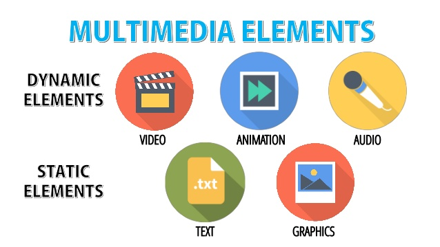

Multimedia refers to the integration of multiple forms of media such as text, graphics, audio, video, and animation into a single digital platform. It enables rich communication, immersive learning experiences, and interactive environments. Multimedia applications are used in entertainment, education, business presentations, and virtual simulations. With technological advancement, multimedia tools have become more powerful and accessible. They allow users to communicate ideas creatively and engage audiences more effectively than traditional media formats.
Advantages of Multimedia
Enhanced Communication: Multimedia improves the way we convey information by combining visuals, audio, and interactivity. It helps in effective message delivery across diverse audiences.
Interactive Learning: Multimedia tools help students understand complex topics better through visual examples and simulations, improving retention.
Increased Engagement: Multimedia content is more interesting and attention-grabbing than plain text or images, holding user attention longer.
Better Retention: Studies show that people retain information longer when it's delivered in multimedia formats that cater to multiple senses.
Wide Reach: Multimedia can be accessed on various devices and platforms, making content more widely available and inclusive.
Disadvantages of Multimedia
High Cost: Developing quality multimedia content requires expensive software and equipment which may not be affordable to everyone.
Technical Issues: Users may face problems with compatibility, slow loading, or crashes especially on older or less powerful devices.
Distraction: Overuse of multimedia in education or work may distract users from the actual goal, reducing effectiveness.
Digital Divide: Not everyone has equal access to devices or internet needed for multimedia, creating inequality in access.
Complex Development: Creating multimedia content demands technical expertise, teamwork, and time which can delay the development process.
Multimedia Components
Multimedia consists of various components that work together to deliver an engaging experience. These include:
Text: Used for content, labels, and instructions in all multimedia presentations.
Graphics: Static images that provide visual context, such as photos, diagrams, and illustrations.
Audio: Sound, music, or narration to enhance understanding and mood of the content.
Video: Moving visuals that demonstrate processes, tell stories, or show real-life footage.
Animation: Motion-based graphics to show changes, simulate effects, or create cartoon-like visuals.

Applications of Multimedia
Multimedia has a wide range of applications in today’s digital world. In education, it enhances e-learning modules with videos and simulations. In entertainment, it powers games, movies, and music streaming. Business sectors use multimedia for advertisements, presentations, and product demos. Healthcare benefits through visual diagnosis tools and simulations. It is also used in scientific research, tourism, and virtual reality systems.
Multimedia Hardware and Software & Future
Multimedia systems depend on specific hardware like sound cards, graphic cards, high-resolution monitors, microphones, speakers, and video cameras. Software includes media players, editors, animation tools, and authoring programs. Together, these tools create, edit, and present multimedia content efficiently. As we move into the future, multimedia is expected to grow with AI-driven content creation, immersive AR/VR, and 3D graphics. The integration of cloud computing and faster networks will make multimedia more accessible and collaborative across devices globally.
QnAs
Q1: What is multimedia? Ans: Multimedia is the integration of text, graphics, audio, video, and animation into a single platform for communication and interaction.
Q2: List any two components of multimedia. Ans: Text and video are two main components of multimedia, used to display information and dynamic visuals respectively.
Q3: What are two advantages of multimedia? Ans: Enhanced communication and improved engagement are two major benefits of using multimedia in digital platforms.
Q4: Name two hardware devices required for multimedia systems. Ans: A microphone and graphic card are common hardware devices used in multimedia applications.
Q5: State one use of multimedia in education. Ans: Multimedia is used in e-learning to make lessons interactive using videos, quizzes, and animations.
Q6: What are the disadvantages of multimedia in learning? Ans: Multimedia can distract students or overwhelm them with too much information if not designed properly.